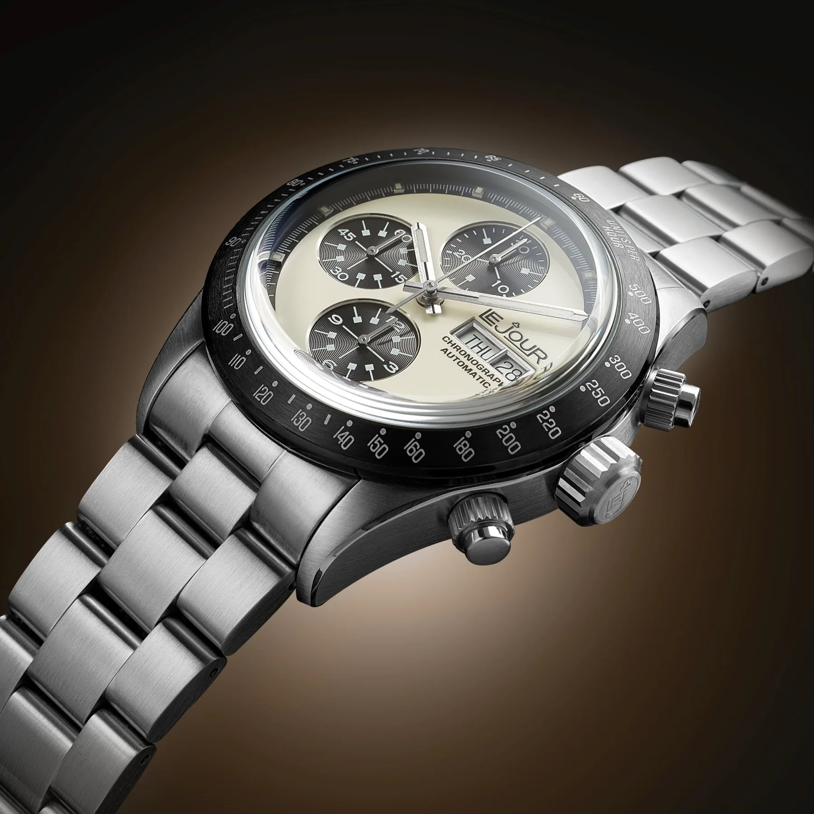
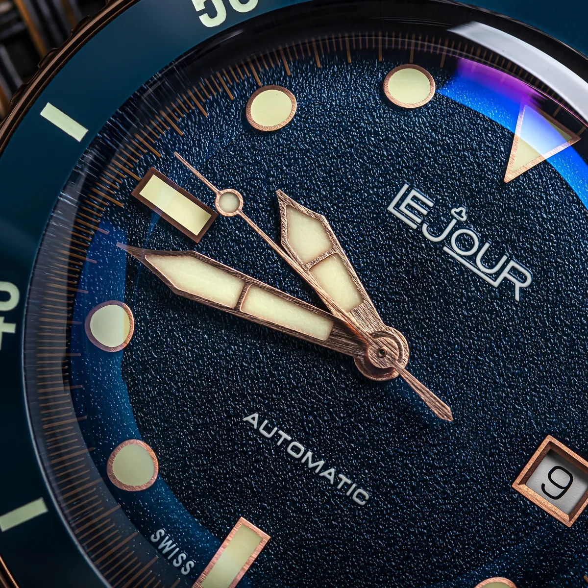
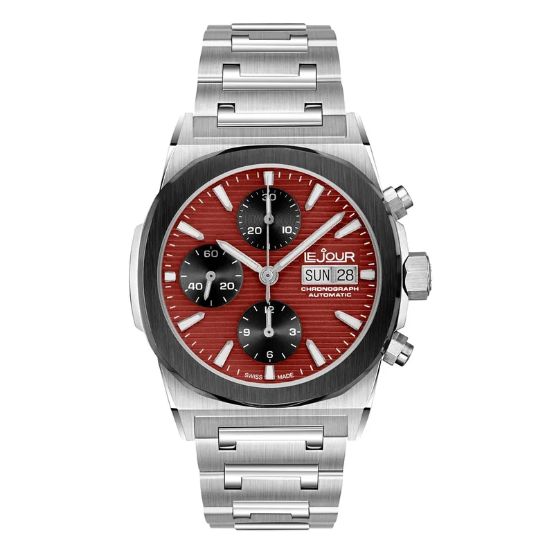
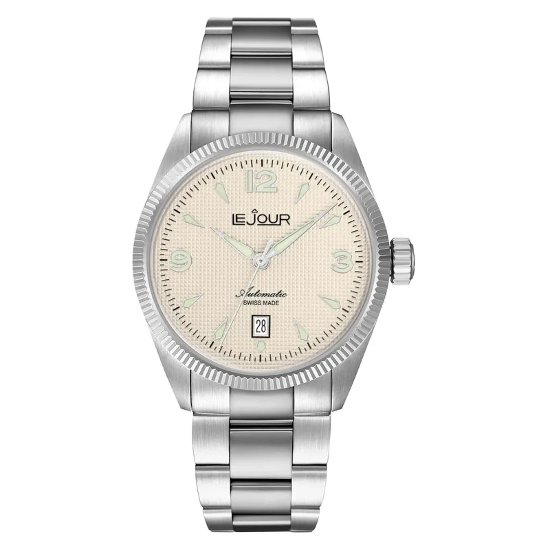

Le Jour is French for the day.
Chronographs and divers built around Swiss Sellita movements, with a name that appeared in a dealer catalogue beside Heuer in June 1980.

June 1980
One watch, two names.
A dealer catalogue from June 1980 lists the Le Jour 7203 beside the Heuer Pasadena and calls them the exact same watch. Le Jour at USD 300, Heuer at USD 354. Heuer built chronographs under the Le Jour name. That page is where our story begins.
Read the story of June 1980
Inside
Sellita, in every watch.
The SW500 runs the chronographs, the SW200 the divers and everyday watches, the SW330 the Hammerhead GMT. Swiss automatic movements that a good watchmaker knows by heart, so your watch is easy to service wherever you live.
How we choose movementsOur collections
Twelve lines in three worlds. Racing chronographs, divers and watches for every day, each in a handful of dials.


From the journal
All stories
The watches
View all 53
Corsa Master Chronograph 42
Panda
42 mm · Sellita SW500 · 200 m
USD 2,250

RMC Chronograph 40
Rosso
40 mm · Sellita SW500 · 100 m
USD 2,250

Fardón 38
Malachite
38 mm · Sellita SW200 · 50 m
USD 1,980

Hammerhead Bronze 39
Blue
39 mm · Sellita SW200 · 200 m
USD 1,580

Delmare Diver 41
Blue
41 mm · Sellita SW200 · 200 m
USD 1,380

Brooklyn 40
Champagne
40 mm · Sellita SW200 · 100 m
USD 1,280

Roadster Chronograph 42
Ice Blue
42 mm · Sellita SW500 · 200 m
USD 1,880

Hammerhead GMT 42
Blue
42 mm · Sellita SW330 · 200 m
USD 1,780
Written about by
- Worn & Wound2017, 2023
- Time+Tide2022, 2023
- Gear Patrol2020
- aBlogtoWatch2018, 2023
Duties and VAT included
Paid at checkout. What you see is what you pay.
Tracked by FedEx
From our hands to your door, followed all the way.
Sellita inside
Movements every good watchmaker knows.
10% on your first order
When you join the letter from Le Jour.
The letter from Le Jour
Every two weeks: new watches and stories from the archive. 10% on your first order when you join.